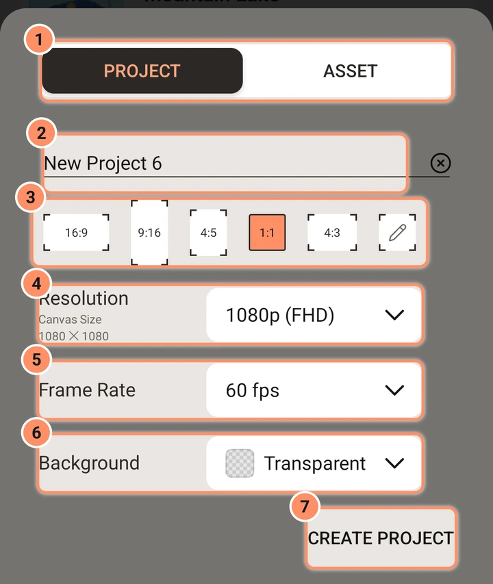

Een project maken
Alle instellingen van het paneel voor een nieuw project.
Op deze pagina
Tik op de ronde + onderaan het startscherm. Er schuift een paneel omhoog. Het opent met de waarden die je de vorige keer gebruikte (vorm, resolutie, framesnelheid en achtergrond; de naam is altijd nieuw). Tik op Terug om het te sluiten zonder iets te maken.

Project of asset
De schakelaar bovenaan heeft twee keuzes: PROJECT (de standaard) en ASSET. Een asset is een herbruikbaar onderdeel met een transparante achtergrond: de achtergrondinstelling staat vast op Transparant. Zie Assets, sjablonen en voorinstellingen.
Naam
De naam begint als "Nieuw project 1", "Nieuw project 2" enzovoort (assets beginnen als "Nieuwe asset"). Tik op het kruisje in het veld om het leeg te maken. Laat je de naam leeg, dan krijgt het project de standaardnaam.
Vorm van het beeld (beeldverhouding)
Knoppen voor 16:9, 9:16, 4:5, 1:1 en 4:3, en een potloodknop voor een Aangepaste beeldverhouding. De standaard is 1:1. Kies 9:16 voor telefoonvideo en 16:9 voor een liggende video.
Resolutie
De rij Resolutie toont de grootte van het canvas, zoals 1920 x 1080. Voor de vijf vormen kies je uit een lijst met de korte zijde:
| Keuze | Korte zijde |
|---|---|
| 2160p (4k) | 2160 |
| 1440p (QHD) | 1440 |
| 1080p (FHD), de standaard | 1080 |
| 720p (HD) | 720 |
| 540p (SD), 360p, 270p, 180p | zoals de naam zegt |
De lange zijde volgt uit de vorm. Een 16:9-project op 1080p is 1920 x 1080, een 4:5-project is 1080 x 1350 en een 4:3-project is 1440 x 1080.
Met Aangepaste beeldverhouding wordt de lijst twee getalvelden voor breedte en hoogte, met een ronde knop Koppelen ertussen. Staat Koppelen aan, dan blijft bij het aanpassen van één zijde de verhouding gelijk die de velden hadden toen je Koppelen aanzette. Elke zijde kan 32 tot 4096 pixels zijn; de app corrigeert de waarde als je het veld verlaat.
Wil je een formaat bewaren voor later, tik dan op + Formaat opslaan onder de velden en geef het een naam (bijvoorbeeld "Banner"). Opgeslagen formaten verschijnen als knoppen ernaast; tik op een ervan om de breedte en hoogte in te vullen. Houd een opgeslagen formaat ingedrukt (rechtsklik op een computer) om de naam te wijzigen of het te verwijderen. In de editor bieden de projectinstellingen dezelfde opgeslagen formaten aan als je een aangepaste verhouding kiest.
Een groter canvas ziet er scherper uit, maar kost meer geheugen en het exporteren duurt langer. 1080p is voor de meeste projecten een goede keuze. Je kunt de resolutie later nog aanpassen in de projectinstellingen van de editor; je lagen worden dan niet herschaald.
Framesnelheid
Kies 12, 15, 18, 20, 24, 25, 30, 48, 50, 60, 90 of 120 frames per seconde. De standaard is 60. Gebruik 24 of 30 voor een filmische look en kleinere bestanden, en 60 voor vloeiende snelle beweging. 90 en 120 zijn voor heel vloeiende beweging op schermen met een hoge verversingssnelheid; niet elke telefoon kan zo'n snelle video exporteren, en het scherm Exporteren laat het weten als de jouwe dat niet kan. Dit bepaalt hoe vaak de editor en de export een beeld tekenen. Videoclips houden hun eigen framesnelheid; zie de optie voor frame-interpolatie op de pagina Exporteren.
Achtergrond
De kleur achter je lagen: Zwart, Wit, Lichtgrijs, Groen, Blauw of Transparant (te zien als een dambord). Na een nieuwe installatie staat Transparant ingesteld. Transparante delen van een geëxporteerde video worden zwart; bij een export als GIF of afbeelding kies je zelf wat transparante delen worden, en PNG houdt ze transparant.
Knoppen onderaan
- PROJECT MAKEN (ASSET MAKEN voor een asset) maakt het project en opent het in de editor.
- Met het kruisje eronder sluit je het paneel.
Is er niet genoeg opslagruimte, dan meldt de app dat en wordt het project niet gemaakt.